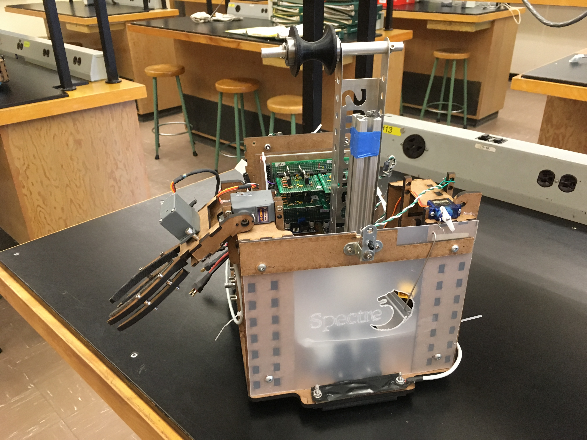

Spectre Robot
A PID-controlled line-following robot that can pick up small objects.
Built from scratch with 3 friends.
Top skills and knowledge gained:
Top skills and knowledge gained:
- 3D CAD modelling using Onshape, design for manufacturing
- Design for manufacturing (DFM), hand tools and drill presses
- Mechanical, electrical, and software integration
Overall Robot
Our robot:

A video of our tests:
2-Axis Arm Design
Spectre features a simple 2-axis robotic arm system to retrieve toy pets and deposit them in the robot.
As seen below, one axis allows the arm to pivot outward and inward, and another allows the arm to grip toys.
Each axis is controlled by an HK15138 servo, which outputs a maximum of 42 N-cm of torque.
Final arm assembly (Onshape Model) with two degrees of freedom.
Full Onshape Model hereThe arm is fabricated out of laser-cut MDF. We chose to use MDF because it can be easily modified to accommodate design changes without refabricating entire parts. Although acrylic and steel are stronger materials, MDF is sufficiently strong for picking up toy pets without warping or breaking.
Final claw:
Other parts.